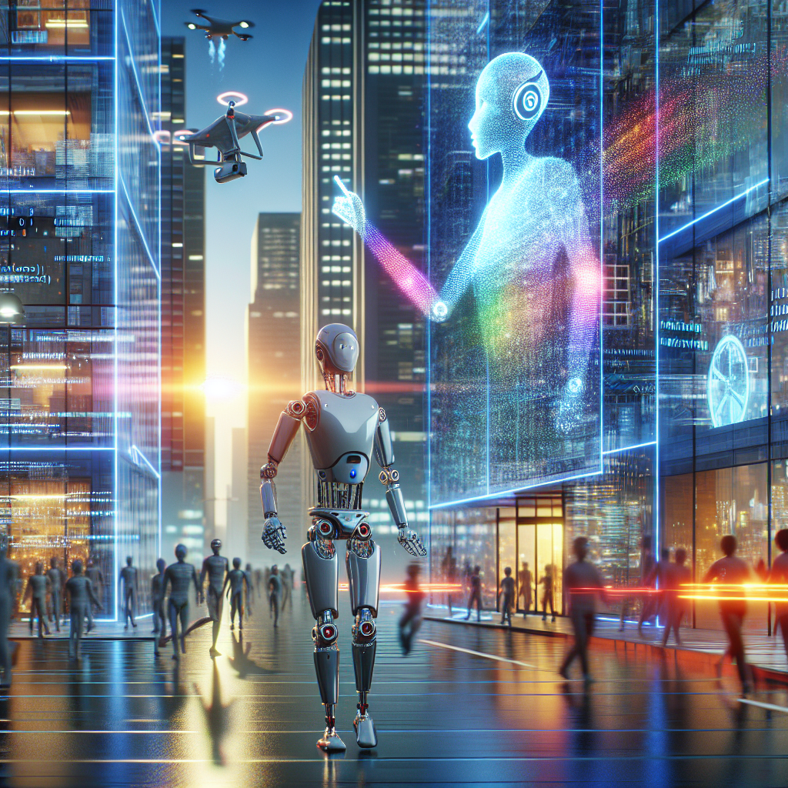

The future of robotics and AI
In my latest blog post, I discuss the exciting potential of robotics and AI in the future. As a robotics engineer, I have seen firsthand the incredible advancements that have been made in these fields. From self-driving cars to intelligent robots that can assist in various tasks, the possibilities are endless.
One of the key areas where robotics and AI can make a significant impact is in education. By incorporating these technologies into STEM (science, technology, engineering, and mathematics) curriculum, we can enhance the learning experience for students and better prepare them for the jobs of tomorrow.
Machine learning and deep learning algorithms are revolutionizing the way we approach problem-solving and decision-making. By teaching students how to work with these technologies, we can empower them to think critically, analyze data, and develop innovative solutions to complex problems.
As we look to the future, it is clear that robotics and AI will play a crucial role in shaping our world. By fostering an interest in these fields at a young age, we can inspire the next generation of innovators and problem solvers. I am excited to see what the future holds for robotics and AI, and I am proud to be a part of this exciting journey.